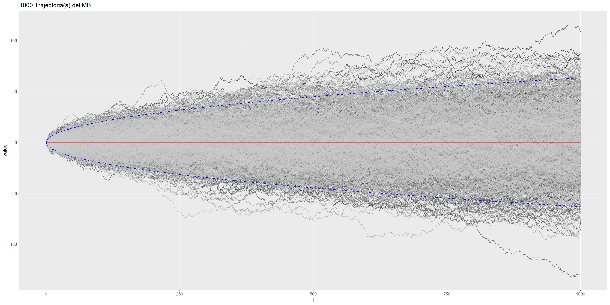
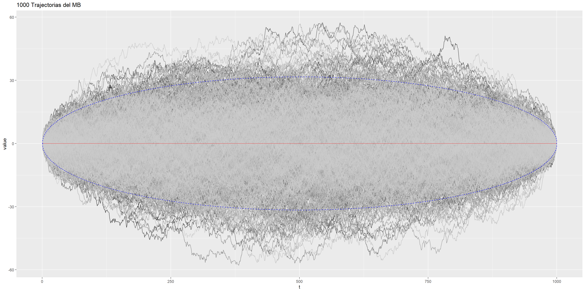
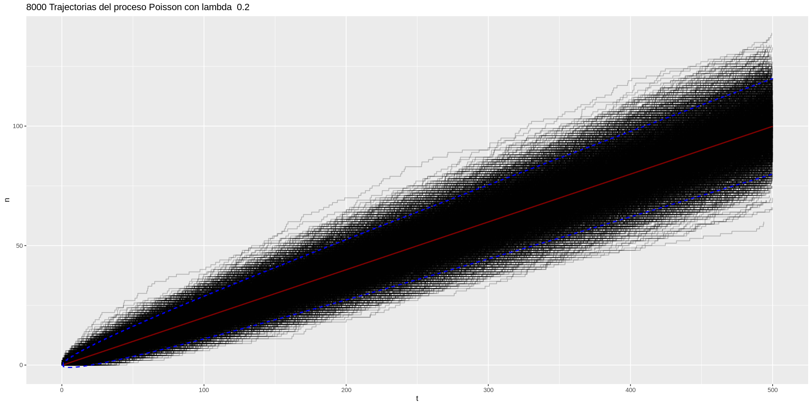
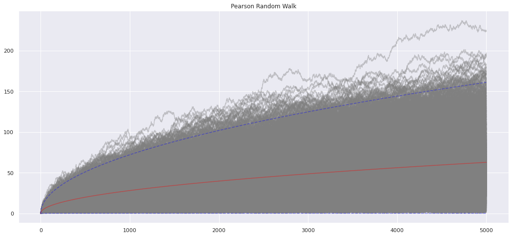

Útlimos artículos

Simulación de algunos Procesos Estocásticos / Python
Posted by Julio César MS 16 de noviembre, 2022
Caminata aleatoria simple, Movimiento Browniano, Proceso Poisson, entre otros.
Ver
Simulación de una caminata aleatoria simple / R
Posted by Julio César MS 16 de noviembre, 2022
Simulación de una caminata aleatoria simple
Ver

Simulación de un Movimiento Browniano / R
Posted by Julio César MS 16 de noviembre, 2022
Simulación de un movimiento Browniano.
Ver

Simulación de un Puente Browniano / R
Posted by Julio César MS 16 de noviembre, 2022
Simulación de un puente Browniano.
Ver
Simulación de un Movimiento Browniano con deriva y volatilidad / R
Posted by Julio César MS 16 de noviembre, 2022
Simulación de un movimiento Browniano con deriva y volatilidad.
Ver

Simulación de un Proceso Poisson / R
Posted by Julio César MS 16 de noviembre, 2022
Simulación de un Proceso Poisson y verificación de algunas propiedades.
Ver

Simulación de una caminata aleatoria de Pearson / Python
Posted by Julio César MS 16 de noviembre, 2022
Simulación de una caminata aleatoria de Pearson.
Ver